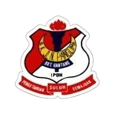

Every school shaped who I am today ✨

2013 - 2018
Sekolah Kebangsaan Jalan Panglima Bukit Gantang
Primary School
2019 - 2022
Sekolah Menengah Kebangsaan Raja Permaisuri Bainun
Secondary School
2022 - 2024
Maktab Rendah Sains MARA(MRSM)Beseri
High School
2024 - Present
Universiti Teknlogi MARA (UiTM) Kedah
Diploma in Library Informatics